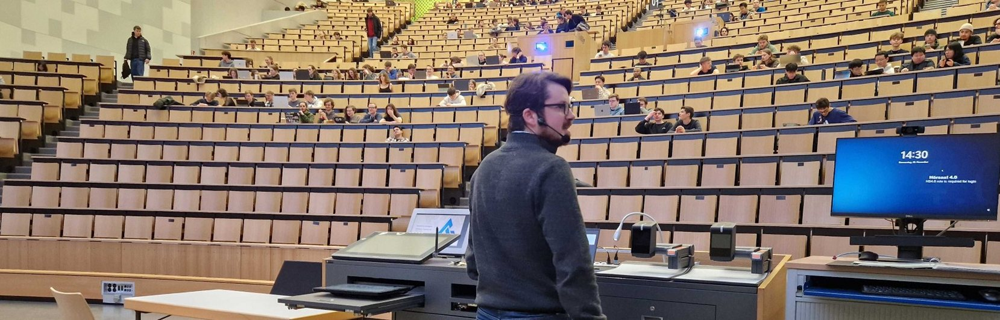

02Forschung
Ich erforsche, wie große Sprachmodelle und modellgetriebene Softwareentwicklung sich gegenseitig besser machen: LLMs, die valide Modelle schreiben, und Modelle, die LLM-Ausgaben im Zaum halten.
- Zitationen
- 587
- h-index
- 14
- i10-index
- 17
Google Scholar ↗ · Stand 10 / 2026

LLMs für die Modellierung
Modellsynthese in DSLs, Grammar Masking für syntaktisch valide Ausgaben, wie LLMs textuelle Modelle beschädigen und reparieren.
Modellgetriebene Entwicklung
Generatoren und DSLs, die wartbar bleiben, wenn sich das Modell weiterentwickelt.
Low-Code & digitale Zwillinge
Generierung maßgeschneiderter Low-Code-Plattformen und Cockpits für digitale Zwillinge.
Informationssysteme
Vom modellgetriebenen Prototyp zur vollwertigen Unternehmensanwendung — und die nachträgliche Einführung von Generierung in bestehende Systeme.
-
2026
MDE Intelligence Co-Organisator
Der internationale Workshop zu Künstlicher Intelligenz und modellgetriebener Softwareentwicklung, seit 2019 Teil der ACM/IEEE-Konferenz MODELS. Er ist das Forum für beide Richtungen der Integration: KI-Techniken, die Modellierung und Modellmanagement intelligenter machen, und MDE-Konzepte — DSLs, Metamodelle, Transformationen —, die KI-Systeme leichter baubar und vertrauenswürdiger machen. Die 8. Ausgabe auf der MODELS 2026 in Málaga habe ich gemeinsam mit Dominik Bork (TU Wien) und Boqi Chen (University of Ottawa) organisiert.
-
2024 — 2026
Arbeitskreise AI4RSE Sprecher
Sprecher der Arbeitskreise zu KI für Research Software Engineering in der Gesellschaft für Informatik (GI) und bei de-RSE, dem deutschen Verein für Research Software Engineering.
-
2026
Workshop AI in RSE Programmkomitee
Mitglied im Programmkomitee des Workshops zu KI im Research Software Engineering.
-
2023 — 2026
LLM-Café Organisator
Ein regelmäßiges Diskussionspanel zu großen Sprachmodellen im Informatikzentrum der RWTH Aachen.
-
2025
Golden UML Model Set Datensatz
Ein von der Community kuratierter, qualitätsgesicherter Datensatz von UML-Modellen mit natürlichsprachlichen Domänenbeschreibungen — als Benchmark für Modellierungsforschung, Lehre und die Evaluation von LLMs.
-
12 / 2025
Künstliche Intelligenz, Agenten & Software Engineering
Gastvortrag, Vorlesung Softwaretechnik · RWTH Aachen
-
09 / 2025
KI im Engineering
Software Engineering Congress · Frankfurt
-
03 / 2025
GenAI in Lehre, Forschung und Software-Entwicklung
Gesellschaft für Informatik · Köln
-
12 / 2024
Künstliche Intelligenz & Software Engineering
Gastvortrag, Vorlesung Softwaretechnik · RWTH Aachen
-
11 / 2024
KI – Ein Blick hinter den Hype
SOPTIM Anwendertage · Köln
-
10 / 2024
Integrating LLMs into Software Engineering: AI as a Component
Gesellschaft für Informatik · Köln
-
07 / 2023
MDE for Financial Management
MDENet